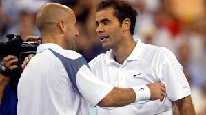
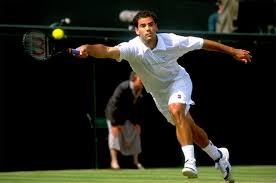
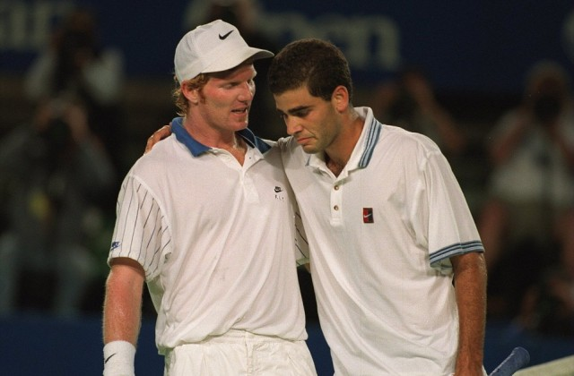
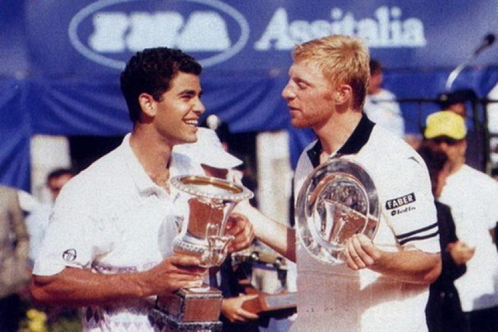
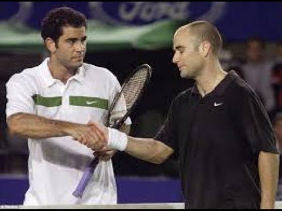
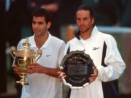
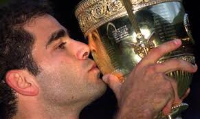
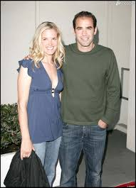

Pete Sámpras est le troisième fils de Soterios Sam Sampras né aux États-Unis d'un père grec Costas Gus Sampras et d'une mère juive polonaise Sarah A. Steinberg. Sa mère Geórgia Vroustouris est une émigrée grecque de Sparte. Il naît à Washington, D.C., mais ses parents déménagent à Palos Verdes, en Californie, alors qu’il n'a que sept ans. C’est la même année qu’il commence à jouer au tennis. Sa sœur Stella , née en 1969, est également initiée au tennis. Elle devient également joueuse puis entraîneuse de tennis. Il brille de tous ses feux rapidement sur le circuit junior américain , où il côtoie une génération exceptionnelle, avec des talents comme Andre Agassi, Jim Courier, ou encore Michael Chang. Il est entraîné durant son enfance par le pédiatre et passionné de tennis Peter Fisher. Celui-ci décide de changer profondément son jeu, afin d’en faire le « nouveau Rod Laver », joueur que Sampras admire. Alors que le futur champion jouait du fond du court avec un revers à deux mains, Fischer l’oriente vers le service-volée, et lui fait adopter un revers à une main. Ce choix du revers à une main entraîne initialement une baisse de résultats pour Sampras mais devient un atout quelques années plus tard.
Sampras commence sa carrière professionnelle en 1988. Il obtient son premier titre du Grand Chelem deux ans plus tard, à l’US Open 1990, en dominant Andre Agassi en finale. C'est le plus jeune joueur ayant jamais gagné ce tournoi5.

C'est en 1988, à l’âge de seize ans, que Sampras commence sa carrière professionnelle. Il participe à son premier tournoi à Philadelphie, où il est battu d’entrée par Sammy Giammalva Jr. Son premier match en Grand Chelem est quant à lui perdu à l’US Open contre Jaime Yzaga. Néanmoins, de bons résultats à Indian Wells et au tournoi de Détroit, entre autres, lui permettent de finir l’année dans le top 100, à la 97e place mondiale, une performance rare pour un joueur si jeune.
La saison suivante est décevante pour Sampras, dont les résultats stagnent. Il parvient toutefois à remporter son premier (et un de ses deux seuls) titre en double à Rome, associé à Jim Courier. Il réalise également un coup d’éclat à l’US Open, en battant lors du deuxième tour le tenant du titre Mats Wilander ; mais cet exploit est à relativiser, dans la mesure où Wilander vivait alors une période difficile. Son parcours dans ce tournoi s’arrête en huitième de finale face à Jay Berger. C’est cette année-là qu’il se sépare de son entraineur Peter Fischer. Il achève la saison en tant que 81e au classement ATP.
Au début de 1990, Sampras remporte son premier titre ATP sur la moquette de Philadelphie face à Andrés Gómez. Après avoir sauté la saison sur terre battue, il en gagne un second à Manchester, malgré sa répugnance à jouer sur gazon ; cette désaffection se traduit ensuite par un échec au premier tour de Wimbledon.
Un bon parcours au Masters du CanadaNote (où il est battu en demi-finale par Michael Chang, une des bêtes noires de ses débuts), et une 12e place mondiale atteinte ne suffisent pas à faire de Sampras un des favoris de l’US Open. Il réussit pourtant à battre Ivan Lendl en quart de finale (mettant du même coup fin à la série de huit finales consécutives du Tchécoslovaque à Flushing Meadow), puis à se défaire de John McEnroe. En finale, il vient facilement à bout d’Andre Agassi 6-4 6-3 6-2 pour remporter son premier titre du grand chelem8. C’est le début d’une rivalité qui perdurera pendant toute sa carrière. À seulement dix-neuf ans, l’Américain devient le plus jeune joueur ayant jamais gagné ce tournoi.
La fin de saison de Sampras est assez moyenne. Pour sa première participation aux Masters, il ne passe pas les poules, insuccès qui ne se reproduira plus par la suite. Il remporte néanmoins la Coupe du Grand Chelem6, une exhibition richement dotée organisée par l’ITF. Quand l’année s’achève, il est devenu le no 5 mondial.
Lors des deux saisons suivantes, Sampras a quelque peu du mal à assumer son statut parmi les favoris. Il remporte néanmoins la Master Cup 1991, ainsi que la Coupe Davis 1992 avec les États-Unis9. La même année, il parvient en demi-finale de Wimbledon, où il est défait par Goran Ivanišević, et en finale de l'US Open10. Il s'incline alors face à Stefan Edberg 3-6, 6-4, 7-6, 6-2. Il déclarera plus tard que ce revers lui a enseigné la haine de la défaite11.
Forfait pour l’Open d’Australie, Sampras ne parvient pas à défendre ses titres au début de 1991 : il est battu à Philadelphie par Ivan Lendl, et à Manchester par Goran Ivanišević, à chaque fois en finale. À Wimbledon, il échoue prématurément comme l’année précédente. La tournée américaine est toutefois meilleure, avec des victoires à Los Angeles, à Indianapolis, et une finale à Cincinnati.

Ces bons résultats ne l’empêchent pas de perdre dès les quarts de finale de l’US Open face à Jim Courier. Après la défaite, l’Américain affirme être soulagé de ne plus avoir à supporter la pression du tenant du titre. Cette déclaration lui vaut les critiques de Courier et de Jimmy Connors. En fait, Sampras avouera plus tard ne pas avoir été assez mature à cette époque-là pour assumer son nouveau statut.
Un tournoi gagné à Lyon et une finale à Paris6 lui permettent d’assurer sa participation à la Masters Cup ; il la remporte en prenant sa revanche sur Jim Courier. L’année se termine toutefois sur une note négative : il provoque en grande partie la défaite de son pays en finale de la Coupe Davis en perdant ses deux simples face aux français Henri Leconte et Guy Forget. Il est no 6 à l’issue de la saison4.
En 1992, après avoir une seconde fois sauté le Grand Chelem Australien à cause d’une blessure à la main, Sampras remporte en février le tournoi de Philadelphie6. Sa saison sur terre battue est assez réussie, avec un quart de finale à Roland Garros (défaite contre Agassi), et un titre à Kitzbühel6. En juillet, il accomplit pour la première fois une bonne performance à Wimbledon en parvenant en demi-finale, après avoir éliminé le tenant du titre Michael Stich. Il est alors défait par Goran Ivanišević.
Le mois suivant, après une brève participation aux jeux olympiques de Barcelone, il gagne le premier Masters Series de sa carrière à Cincinnati face à Ivan Lendl. Il fait dès lors partie des favoris pour remporter l’US Open. À l'issue d'un parcours difficile, il bat assez aisément en demi-finale le numéro un mondial Jim Courier. Lors de la finale face à Stefan Edberg, Sampras gagne le premier set, perd le second, puis le troisième après un tie-break serré ; il laisse alors filer la quatrième manche. Cet échec sera déterminant dans son esprit ; il le conduit à détester la défaite, et à désirer ne plus jamais connaître la sensation d’avoir abandonné un match important.
Pendant la tournée indoor, il conserve son titre à Lyon6, puis échoue en demi-finale de la Masters Cup contre Jim Courier. Il participe ensuite à la victoire des États-Unis contre la Suisse en finale de la Coupe Davis en gagnant son double associé à McEnroe. Fin 1992, il est no 3, derrière Edberg et Courier.
Domination du tennis mondial
Entre 1993 et 1998 inclus, Sampras finit à chaque fois l’année à la première place mondiale4. Jusqu’en 2000, il remporte sept tournois de Wimbledon, quatre US Open et deux Open d'Australie, soit treize tournois du Grand Chelem, dépassant ainsi le record de titres en Grand Chelem de Roy Emerson10.
L’année 1993 est marquée par la lutte qui oppose Sampras au précédent numéro un ATP Jim Courier pour la première place au classement. Sampras parvient à s’assurer cette position dès avril. Il la conforte en battant Courier en finale de Wimbledon puis en remportant à nouveau l’US Open face à Cédric Pioline. Cette saison le consacre en définitive comme le joueur dominant du circuit masculin.

En janvier, Sampras est à nouveau battu par Stefan Edberg en demi-finale de l’Open d’Australie. Néanmoins, à l’inverse des années précédentes, il réalise globalement une première partie de saison très réussie, avec des victoires à Sydney, Hong Kong, Tokyo et surtout à Miami. Ces bons résultats lui permettent de devenir numéro un mondial en avril à la place de Courier. Beaucoup alors, dont ce dernier, estiment que Sampras ne détient pas légitimement ce rang, faute d'avoir gagné l'un des quatre derniers tournois du Grand Chelem.
En mai, il confirme ses progrès sur terre battue en atteignant les demi-finales du tournoi de Rome et les quarts de finale de Roland-Garros (éliminé par le futur vainqueur Sergi Bruguera). À Wimbledon un mois plus tard, après un match difficile en quart de finale contre Agassi, il dispose facilement au tour suivant du triple champion Boris Becker. En finale, il vient à bout de Jim Courier, inattendu à ce niveau sur herbe, à l'issue d'une rencontre accrochée (7-6, 7-6, 3-6, 6-3). Ce succès met fin à une période de trois ans sans titre en Grand Chelem, et signe le début d’un long règne sur le gazon londonien. Désormais, la légitimité du classement de Sampras n’est plus remise en cause.
L’Américain obtient ensuite des résultats moyens jusqu’à l’US Open. Là, il profite d’un tableau éclairci par les éliminations prématurées de ses principaux rivaux pour remporter sans peine son troisième tournoi du Grand Chelem, en battant Cédric Pioline 6-4, 6-4, 6-3 en finale.
En fin de saison, il enchaîne des victoires à Lyon et à Anvers. Ce dernier titre lui permet d’être assuré de finir l’année au rang de numéro un mondial. Il perd toutefois la finale de la Masters Cup contre Michael Stich6 : cette défaite met ainsi fin à une série de huit finales consécutives remportées.
Sampras commence l’année suivante en s’imposant lors du tournoi du Grand Chelem australien face à Todd Martin10. À Roland-Garros, il échoue comme les deux années précédentes en quart de finale. Si la terre battue lui résiste, il confirme sa domination sur gazon en venant à bout d’Ivanisevic en finale de Wimbledon, avant d’être éliminé prématurément à Flushing Meadows par Jaime Yzaga. Sampras couronne néanmoins ce qui est souvent considéré comme la meilleure saison de sa carrière par une victoire aux Masters en battant Boris Becker.
À l’Open d’Australie, après avoir peiné face au jeune Ievgueni Kafelnikov au second tour, Sampras déroule jusqu’au titre. Sur sa route, il bat une fois encore Courier, tenant du titre, puis la surprise du tournoi Todd Martin en finale 7-6, 6-4, 6-4. Ce nouveau succès fait de lui le premier joueur à enchaîner trois titres du Grand Chelem d’affilée depuis Rod Laver en 1969.

Pete Sampras semble ensuite irrésistible : il réussit le doublé Indian Wells/Key BiscayneNote 4 en mars, gagne les tournois d’Osaka et de Tokyo en avril, et même celui de Rome, pourtant joué sur terre battue, en mai. Bien qu’il répète que cette surface est celle où il se sent le moins à l’aise, on le considère dès lors comme un gagnant possible de Roland-Garros. Il échoue cependant comme les deux années précédentes en quart de finale, cette fois face à Courier, qui met ainsi un terme à une série de quatre défaites consécutives contre lui.
Nonobstant cet échec, Sampras survole ensuite le tournoi de Wimbledon, ne laissant qu’un seul set à ses adversaires sur sa route ; Ivanišević est sa victime 7-6, 7-6, 6-0 en finale. Une blessure à la cheville l’empêche de jouer pendant la tournée américaine d'été. Il est néanmoins rétabli à temps pour participer à l’US Open et tenter un Petit Chelem mais, gêné par des ampoules aux pieds, il est éliminé dès les huitièmes de finale par Jaime Yzaga.
En novembre, il gagne pour la seconde fois les Masters en prenant sa revanche sur Boris Becker, qui l’avait battu lors des matchs de poule. Ce scénario se répétera souvent par la suite. Il termine ainsi par un grand titre une des meilleures années de sa carrière. Seul Agassi, revenu à son meilleur niveau en deuxième partie de saison, le talonne au classement.
La saison 1995 le voit lutter contre Andre Agassi, de retour à son meilleur niveau après une longue période de méforme. Sampras échoue en finale de l’Open d'Australie face à lui. Ce revers lui fait perdre quelques mois plus tard sa place de numéro un mondial au bénéfice de son rival. Il remporte cependant Wimbledon comme les deux années précédentes, cette fois-ci en battant Boris Becker. Il prend ensuite sa revanche sur Agassi en finale de l'US Open. En fin d’année, il retrouve le premier rang mondial22, et amène une trente et unième Coupe Davis à son pays en remportant ses deux simples et son double lors du dernier tour de la compétition face à la Russie.
Pendant l’Open d’Australie, l’entraîneur de Sampras Tim Gullikson est victime d’une attaque cérébrale. Cette nouvelle semble affecter son jeu23 : il doit remonter des handicaps de deux sets à zéro pour battre Magnus Larsson en huitième de finale, puis Jim Courier au tour suivant (lors de ce match, son émotion au début du cinquième set est telle qu’il pleure sur le court), avant de venir péniblement à bout en quatre manches de Michael Chang. En finale au terme de ce parcours éprouvant, il rencontre Agassi, qui de son côté n’a perdu aucun set durant la quinzaine. Que cette différence de fraîcheur physique ait joué ou pas, il est battu 6-4 1-6 6-7 4-6. Il s’agit du seul échec de Sampras en finale d’un tournoi du Grand Chelem entre 1993 et 1999.
Les Masters Series américains de mars voient les deux rivaux se partager les titres : Sampras défait Agassi en finale d’Indian Wells, mais celui-ci prend sa revanche à Key Biscayne. Grâce à cette victoire, Agassi devient numéro un mondial en avril. Le mois suivant, Sampras manque son tournoi de Roland Garros, éliminé dès le premier tour par Gilbert Schaller alors qu’il avait fait de ce tournoi un des objectifs majeurs de sa saison.

À Wimbledon, il parvient péniblement à conserver son titre, mis notamment en danger par Goran Ivanišević en demi-finale. La finale face à Boris Becker est plus facilement gagnée 6-7, 6-2, 6-4, 6-2, l’Allemand commençant à mal servir à partir du second set.
Ayant ainsi confirmé sa supériorité sur gazon, il fait de nouveau face à Agassi pendant la tournée américaine. Celui-ci le défait encore une fois en finale du Masters du Canada6. La confrontation entre les deux rivaux à l’US Open est dès lors très attendue. Les deux hommes se retrouvent en effet en finale. Agassi est plutôt favori, grâce à ses victoires récentes sur Sampras, mais surtout en raison de sa série de vingt-six victoires consécutives aux États-Unis. Pourtant, ce dernier l’emporte 6-4, 6-3, 4-6, 7-5. Son rival attendra trois ans avant de se remettre réellement de cette défaite.
En fin de saison, un titre à Paris permet à Sampras de redevenir numéro un mondial6. À la Masters Cup, il subit une défaite inattendue en demi-finale face à Michael Chang, adversaire qu’il avait pourtant battu lors de leurs six dernières confrontations.
Un mois plus tard, Sampras est le fer de lance de l’équipe des États-Unis lors de la finale de la Coupe Davis contre la Russie. La rencontre se situe à l’extérieur sur terre battue. Opposé à Andrei Chesnokov, spécialiste de la surface, pour le premier point, il en sort vainqueur 3-6, 6-4, 6-3, 6-7, 6-4, après avoir frôlé la rupture physique. Il parvient malgré cela à remporter son double associé à Todd Martin le lendemain, puis à donner le point décisif à son pays face à Ievgueni Kafelnikov le jour suivant9. Parmi les faits marquants de sa carrière, cette performance en Coupe Davis est une des choses dont il demeurera le plus fier.
En 1996, après avoir été éliminé prématurément en Australie par le jeune Mark Philippoussis, Sampras réalise la meilleure performance de sa carrière à Roland Garros en parvenant en demi-finale ; fatigué, il est alors aisément défait par Ievgueni Kafelnikov. Il est ensuite battu en quart de finale de Wimbledon par Richard Krajicek10, avant de frôler une désillusion semblable à l'US Open, manquant d’être éliminé par Àlex Corretja ; mais il parvient finalement à remporter le tournoi face à Michael Chang. Il clôt sa saison par une troisième victoire aux Masters, obtenue en battant une nouvelle fois Boris Becker.
L’année 1996 commence mal pour Sampras : il est éliminé dès le troisième tour de l’Open d’Australie par Mark Philippoussis. La suite de sa saison jusqu'en mai est néanmoins assez réussie, avec quatre titres remportés. C’est ce mois-ci que Tim Gullikson décède, évènement dont il restera longtemps affecté.
Arrivé à Roland Garros sans véritable préparation sur terre battue, il va pourtant y réussir le meilleur parcours de sa carrière, peut être aidé par des conditions météorologiques particulières (le climat chaud et sec rendant la surface plus rapide). Au second tour il vient à bout 6-3, 6-4, 6-7, 2-6, 6-3 du double champion Sergi Bruguera, qui revenait de blessure. Il bat ensuite Todd Martin 3-6, 6-4, 7-5, 4-6, 6-2, puis Scott Draper 6-4, 7-5, 6-2. En quart de finale, il est mené deux sets à zéro par Jim Courier, avant de retourner la situation 6-7, 4-6, 6-4, 6-4, 6-4. Opposé à Kafelnikov en demi-finale, Sampras semble avoir ses chances, même s'il a perdu leur dernière confrontation à la World Team Cup : il mène quatre à un dans leur face à face, et il l’a déjà défait deux fois sur terre battue32. Fatigué par ses combats précédents, il s’incline 6-7, 0-6, 2-6. Il s’agissait-là sans doute de sa meilleure chance de gagner Roland Garros. Jamais plus il ne dépassera le troisième tour porte d'Auteuil.
Fort de ses trois succès précédents, Sampras est le favori logique de Wimbledon un mois après. Il est cependant surpris en quart de finale par Richard Krajicek, qui réalise un grand match. C’est sa seule défaite sur le gazon londonien entre 1993 et 2000. Son vainqueur du jour continuera à lui poser des problèmes à l’avenir.
Seule une victoire à l’US Open peut désormais sauver la saison de Sampras. Mis en danger par Jiri Novak au second tour, il connaît une rencontre particulièrement difficile face à Àlex Corretja en quart de finale : poussé au jeu décisif du cinquième set, il est malade et vomit sur le court35. Il attribuera plus tard cette réaction à sa nervosité à l’idée de finir l’année sans aucun titre du Grand Chelem. Sa thalassémie a également été mise en cause. Quoi qu'il en soit, il parvient malgré tout à l’emporter 7-6, 5-7, 5-7, 6-4, 7-6, en sauvant une balle de match sur son service. Il bat ensuite Goran Ivanišević en demi-finale, puis Michael Chang 6-1, 6-4, 7-6 en finale. Il gagne ainsi son quatrième titre de l’US Open, son dernier avant six ans.
En fin de saison, il atteint la finale du Masters de Stuttgart6, où il est défait par Becker en cinq sets. Lors de la Masters Cup, celui-ci le bat à nouveau en poule, avant que les deux hommes ne se retrouvent en finale. Sampras réussit alors à s’imposer 3-6, 7-6, 7-6, 6-7, 6-4 ; ce match est fréquemment jugé comme l’un des plus beaux de sa carrière.
La saison 1997 ressemble beaucoup à celles de 1993, 1994, 1995. Sampras y remporte l’Open d'Australie contre Carlos Moyà, et le tournoi de Wimbledon face à Cédric Pioline10, échouant à Flushing Meadows contre Petr Korda. Il y gagne également une fois encore les Masters en venant à bout de Kafelnikov. C’est la dernière année au cours de laquelle il réussit à obtenir deux titres du Grand Chelem.
En 1998, les résultats de Sampras s’infléchissent nettement. Il ne parvient pas à conserver son titre de l'Open d'Australie, éliminé par Karol Kučera. Sur le gazon londonien, il sort péniblement vainqueur d’une finale en cinq sets contre Ivanisevic. Deux mois plus tard, il est battu par Patrick Rafter en demi-finales de l'US Open. Il n’obtient finalement que quatre titres, et aucun Masters Series6. Il réussit malgré tout à terminer une ultime fois l’année au rang de numéro un mondial.
Lors du Grand Chelem australien, Sampras semble être opposé à des adversaires à sa portée (tous spécialistes de la terre battue). Pourtant, incommodé par la chaleur, il peine face à Dominik Hrbatý en huitième de finale, puis contre Albert Costa au tour suivant. Il se ressaisit néanmoins pour dominer aisément Thomas Muster, puis Carlos Moyà en finale 6-2, 6-3, 6-3.
Sampras ne réalisera plus de grandes performances entre février et mai (seulement deux titres obtenus). À Roland Garros, son parcours de l’année précédente laisse espérer un bon résultat, malgré une tournée sur terre battue inquiétante. Ce ne sera pas le cas : après deux premiers matchs convaincants, une maladie d'origine génétique, une thalassémie (dans sa forme bénigne depuis sa naissance et qui l’a affaiblie parfois en matchs), le mettra K.O. physiquement au moment d’affronter Magnus Norman37. Il est éliminé 2-6, 4-6, 6-2, 4-6. L'Américain ne parlera pleinement de sa thalassémie qu'à partir des années 2000, en fin de carrière.
Il reconquiert ensuite sans peine son titre à Wimbledon. Comme lors de l’US Open 1993, les échecs précoces des autres favoris facilitent son parcours ; seul Petr Korda réussit à l'inquiéter avant la finale où il expédie Cédric Pioline 6-4, 6-2, 6-4.
 Titré à Cincinnati en août, Sampras paraît en bonne position pour réaliser le Petit Chelem à l’US Open. Malheureusement, il subit en huitième de finale une défaite frustrante face à Korda, qui réalise un des meilleurs matchs de sa carrière (qui remportera ensuite l'Open d'Australie 1998, mais sera au cours de l'été convaincu de dopage).
Titré à Cincinnati en août, Sampras paraît en bonne position pour réaliser le Petit Chelem à l’US Open. Malheureusement, il subit en huitième de finale une défaite frustrante face à Korda, qui réalise un des meilleurs matchs de sa carrière (qui remportera ensuite l'Open d'Australie 1998, mais sera au cours de l'été convaincu de dopage).
Sampras retrouve le chemin du succès en fin de saison avec une victoire à Paris6 et surtout pour la quatrième fois aux Masters, en battant Kafelnikov.
En 1998, Sampras ne parvient pas à conserver son titre de l’Open d’Australie, battu en quart de finale par Karol Kučera. De médiocres résultats jusqu’en avril lui valent de perdre sa place de numéro un mondial pendant quelques semaines au bénéfice de Marcelo Ríos ; cela ne lui était plus arrivé depuis deux ans. Il semble néanmoins retrouver tout son allant sur le gazon londonien où il parvient en finale en ne perdant qu’un seul set en chemin. Mais celle-ci est très disputée : son opposant, Goran Ivanišević, laisse probablement passer sa chance en perdant le tie-break serré de la seconde manche. Sampras s’en sort 6-7, 7-6, 6-4, 3-6, 6-2. Il s’agit de la seule finale d'un tournoi du Grand Chelem qu’il ait jamais jouée en cinq sets.
En août, il est battu en finale du Masters de Cincinnati par Patrick Rafter. À l’issue du match, Sampras se plaint de l’arbitrage, et émet plusieurs déclarations agressives à l’encontre de son adversaire. C’est dans ce contexte tendu que les deux hommes se retrouvent en demi-finale de l’US Open un mois après. À un set partout, break de Sampras dans la troisième manche, celui-ci se blesse à la jambe. Ayant désormais des difficultés à faire autre chose que de tenir son service43, il est défait 7-6, 4-6, 6-2, 4-6, 3-6.
En fin de saison, Sampras n’est pas assuré de finir une sixième fois consécutive l’année numéro un mondial. Cependant, il tient beaucoup à réaliser cette performance ; la poursuite de ce record, qu’il pense imbattable, le rend très nerveux pendant les deux mois qu’il passe en Europe. Malgré un titre à Vienne, une finale à Paris et une demi-finale à Stuttgart, c’est seulement en novembre, en parvenant en demi-finale de la Masters Cup, qu’il atteint ce but. Il est alors éliminé par Àlex Corretja.
Victime de blessures, Sampras doit déclarer forfait pour les deux tournois du Grand Chelem sur dur la saison suivante. Il accomplit néanmoins ce qui est souvent considéré comme la meilleure performance de sa carrière en finale de Wimbledon face à Andre Agassi. C’est contre ce même adversaire qu’il remporte son cinquième et dernier Masters. Il achève l’année en tant que numéro trois mondial au classement.
En 2000, Sampras réalise sa dernière saison parmi les tout meilleurs joueurs du monde. La place de numéro un n'étant plus une priorité pour lui, il semble se concentrer sur les tournois du Grand Chelem. Battu par Agassi en demi-finale de l’Open d'Australie10, il est également nettement dominé en finale de l'US Open 6–4, 6–3, 6–3 par le jeune Marat Safin10 mais parvient toutefois à remporter pour la dernière fois Wimbledon en venant à bout de Patrick Rafter.
Une blessure à la cheville force Sampras à déclarer forfait pour l’Open d’Australie. De retour à la compétition en mars, il remporte son premier titre en préparation de Wimbledon, au Queen’s Club.
Dans son pré carré londonien, il est mis en danger en quart de finale par Mark Philippoussis. L’Américain sent le match lui échapper après la perte du premier set. Heureusement pour lui, une blessure à la jambe oblige alors son adversaire à abandonner. Arrivé en finale, il affronte Agassi, qui lui dispute la première place mondiale. À 3-3, 0-40 sur son service en faveur d’Agassi, Sampras commence à jouer de façon exceptionnelle47. Il domine son vis-à-vis dans tous les secteurs de jeu, même du fond du court. Il l’emporte 6-3, 6-4, 7-5. De son propre aveu, il réalise ce jour-là le meilleur match de sa carrière.
Des victoires à Los Angeles et Cincinnati, obtenues en battant respectivement Agassi et Rafter, le confortent dans son statut de grand favori de l’US Open. Malheureusement, il est immobilisé juste avant le tournoi par une hernie discale contractée au cours d’un entraînement. Forcé de se retirer jusqu’en novembre, il perd désormais toutes ses chances de finir l’année numéro un mondial.

Sampras est toutefois rétabli à temps pour participer à sa dixième Masters Cup. Aisément dominé par Agassi en poule, il retrouve en finale son plus grand tennis pour prendre sa revanche sur son rival 6-1, 7-5, 6-4. Il termine la saison à la place de no 3 au classement4, devancé par Agassi et Kafelnikov.
En 2000, le parcours de Sampras à l’Open d’Australie s’achève en demi-finale ; il est défait 4-6, 6-3, 7-6, 6-7, 1-6 par Agassi, gêné par une lésion à la jambe à partir du quatrième set. En mars, il remporte le Masters de Miami face à Gustavo Kuerten6. C’est son ultime titre en dehors des tournois du Grand Chelem.
Souffrant du pied, il ne s’engage pas à Wimbledon dans les meilleures conditions. Il accède pourtant sans problème à la finale, sans rencontrer de têtes de séries sur sa route. Il bat alors Patrick Rafter 6-7, 7-6, 6-4, 6-2. Cette treizième victoire en Grand Chelem lui permet de dépasser le record détenu jusqu'alors par Roy Emerson. Il s’agit de son dernier titre avant deux ans.
Sampras n’obtient plus ensuite de bons résultats avant l’US Open. À Flushing Meadows, il élimine sa bête noireNote Krajicek en quart de finale (en retournant de façon spectaculaire un tie-break mal engagé dans la seconde manche), puis vient à bout de l’espoir australien Lleyton Hewitt au tour suivant. Il est alors considéré comme le favori de la finale face à Marat Safin, le Russe semblant inexpérimenté à ce niveau. Il s’incline pourtant 4-6, 3-6, 3-6.
Au Masters, Sampras échoue en demi-finale contre Kuerten. En fin d’année, il termine comme la saison précédente à la troisième place mondiale, derrière Safin et Kuerten.
Pete Sampras a remporté soixante-quatre titres en simple au cours de sa carrière. Il a gagné son premier tournoi à Philadelphie en 1990, et son dernier à l’US Open en 2002. Parmi ses titres, quatorze tournois du Grand Chelem (sept Wimbledon, cinq US Open, deux Open d'Australie), cinq Masters Cup, et deux Coupe Davis. Il n’a jamais remporté Roland-Garros6. Il est le seul joueur de l'ère open à avoir achevé six saisons ATP au premier rang mondial, entre 1993 et 1998, place qu'il occupe pendant un total de 286 semaines.

Sampras détient par ailleurs de nombreux records dans l’histoire du tennis. Par exemple, il détient également le record du nombre d'années terminées en tête du classement ATP (6 ans).
Le début de saison 2001 de Sampras est moyen. Il est éliminé dès les huitièmes de finale de l’Open d’Australie par Todd Martin. Il réalise sa seule bonne performance avant Wimbledon à Indian Wells, où il atteint la finale6. L'Américain reste néanmoins favori sur le gazon londonien51, où il a l'habitude de retrouver son meilleur niveau de jeu. Malgré cela, il est surpris en huitième de finale par Roger Federer10, âgé de dix-neuf ans, 6-7, 7-5, 4-6, 7-6, 5-7. Il s’agit de sa première défaite en cinq sets à Wimbledon et de la seule confrontation entre les deux hommes en compétition officielle.
Ce revers semble porter un coup à son moral, puisqu'il enchaîne les échecs prématurés jusqu’à l’US Open. Mais il paraît se ressaisir alors : il bat successivement Rafter en huitième de finale, puis Agassi 6-7, 7-6, 7-6, 7-6, avant de prendre sa revanche sur Safin en demi-finale. Malheureusement, opposé à Lleyton Hewitt en finale, il s’incline une nouvelle fois face à son jeune adversaire 6-7, 1-6, 1-6.
À l’issue de cette mauvaise saison, qui voit l'Américain descendre au dixième rang mondial, la plupart des commentateurs s’accordent à le juger sur la pente descendante. Sampras tente de réagir pendant l’intersaison en changeant d’entraîneur, et en se soumettant à un programme spécial de remise en forme. Il dit ne vouloir prendre sa retraite qu’à « ses conditions ».
Aucune amélioration n’est pourtant constatée en 2002. Il est à nouveau battu en huitième de finale du Grand Chelem australien, par Marat Safin cette fois. Une demi-finale atteinte à Indian Wells mise à part, il n’obtient aucun résultat probant. À Wimbledon, cantonné sur le court no 2, gêné par le soleil qui l’empêche de bien servir, il est éliminé dès le second tour par le 145e mondial George Bastl. Il considère aujourd'hui cette défaite comme la pire de sa carrière.
Peu d’observateurs pensent alors Sampras capable de remporter un autre titre majeur. Celui-ci persiste pourtant à croire en lui-même. C’est à l'US Open que se produit le déclic ; après une victoire in extremis face à Greg Rusedski au troisième tourNote , il retrouve son meilleur niveau pour battre Tommy Haas, Andy Roddick, puis Sjeng Schalken. Confronté à Agassi en finale, il en sort vainqueur 6-3, 6-4, 5-7, 6-4. Il gagne ainsi son quatorzième et ultime tournoi du Grand Chelem.
Après avoir plusieurs fois reporté son retour à la compétition, Sampras annonce sa retraite juste avant l'US Open 2003, au cours d’une cérémonie organisée en son honneur.

Depuis son retrait des courts en 2002, Pete Sampras s'est fait extrêmement discret. Marié à Bridgette Wilson depuis 2000, il a eu deux enfants avec cettedernière. Bien qu'il soit atteint de thalassémie mineure (ce qui provoque de l'anémie), l'ex champion US n'arrête pas pour autant le sport. En plus de continuer à jouer ponctuellement au tennis, il s'adonne aux joies du golf et devient un fan inconditionnel de formule 1 et de basket (en particulier les Lakers de Los Angeles). Il fait son retour dans le monde de la petite balle jaune.
En 2007, Sampras fait son retour sur les courts de tennis en participant à des tournois du circuit senior. Le 6 mai 2007, il remporte le tournoi de Boston face à Todd Martin en 3 sets (6-3, 5-7, 11-9). Deux semaines plus tard, il gagne celui d’Athènes face au même adversaire. Malgré ces titres, il répète qu'il ne souhaite pas revenir sur le circuit ATP.
Trois matchs d’exhibition ont eu lieu en Asie en novembre 2007 contre Roger Federer. Celui-ci a remporté les deux premiers en deux sets, le premier 6-3, 6-4 et le second de façon plus accrochée 7-6, 7-6. La troisième rencontre a quant à elle été gagnée par Sampras 7-6, 6-4. Pour leur dernier match en date, en mars 2008 au Madison Square Garden de New York devant 18 000 spectateurs, Roger Federer a repris l'avantage en l'emportant 6-3, 6-7, 7-6.
Pete Sampras a été consacré membre du International Tennis Hall of Fame en 2007.
En 2010, associé à Roger Federer, il joue un double contre Rafael Nadal et Andre Agassi. Ce match est marqué par une joute verbale entre Agassi et Sampras. L'année suivante, il joue plusieurs exhibitions. Battu le 7 février par Gaël Monfils 7-6, 6-4, il s'impose contre Andre Agassi trois semaines plus tard (6-3, 7-5).
Toujours sur le côté caritatif, il aide plusieurs oeuvres avec comme objectif que 100$ seront reversées aux associations à chaque fois qu'il frappera un ace. En 2008, il écrit et publie son autobiographie : A Champion's Mind: Lessons from a Life in Tennis. Il a possédé des parts du tournoi d'Indian Wells pendant quelques années avant de les revendre en 2009. Pete Sampras ne s'est jamais tourné vers le coaching ni vers le rôle de commentateur et ne fait désormais que peu parler de lui.
Devenu légende de son sport, Pete Sampras a écumé les courts de tennis sur une période de 1988 à 2002, en accumulant de nombreux titres tout au long de sa carrière.
 Pete Sampras
Pete Sampras